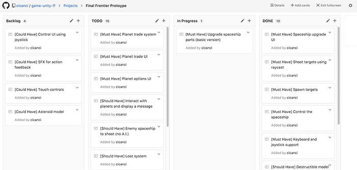

No post anterior sobre o projeto houve pouco progresso por que meus dias estavam corridos, porém estas duas últimas semana foram ainda mais corridas e não conseguir trabalhar projeto na Unity, porém conseguir pelo menos organizar as tarefas do projeto.
Organizando a casa
Quando comecei o projeto, há 4 meses atrás, estava pensando em criar um projeto no trello para organizar as tarefas e deixar público o andamento do projeto em um board. Porém, mês passado o GitHub lançou um mini-trello para organizar tarefas de um repositório. Apesar de ser limitado, é bem útil pois cada tarefa pode ser ligada com um issue e associado a um pull request.
Como o repositório está no GitHub e eu pretendo usar seus recursos, como a Wiki para o GDD, achei que faz sentido manter a organização de tarefas lá, assim fica tudo no mesmo lugar. Outra feature legal é que cada repositório pode ter vários projetos. Eu criei um projeto para o protótipo, depois posso criar um para bugs, releases, e qualquer outra coisa que fizer sentido.
Mini Scrum
Estou usando alguns conceitos de scrum, embora minha sprint seja indeterminada. No board criar as colunas de To Do (o que deve ser feito na sprint), Doing (o que está sendo feito) e Done (tudo que já foi feito em todas sprints do projeto). Adicionei também uma coluna chamada Backlog onde vou colocar tarefas que ainda não estão na sprint atual, mas um dia entrarão em alguma sprint. Por enquanto tem pouco coisa lá, mas agora que tenho um lugar para organizar o projeto mais tarefas irão surgir.

Neste link você pode acompanhar o desenvolvimento do projeto. É um board básico simples, porém é o essencial para este momento do projeto. Assim ficará mais clara pra mim e para você aonde o projeto está indo, o que está sendo feito e o que será feito. Como sempre, qualquer sugestão é sempre bem vinda!
Conclusão
Semana que vem vou fazer um post sobre o que fez eu não conseguir trabalhar neste projeto nas últimas duas semanas. Espero que nas próximas duas semanas eu consiga trabalhar mais neste projeto, não vejo a hora de poder ter algo jogável para compartilhar aqui.
O andamento do projeto pode ser conferido no GitHub. Todos os posts desta série sobre meu projeto podem ser vistos na tag Final Frontier, e como sempre qualquer sugestão ou opinião é bem vinda!